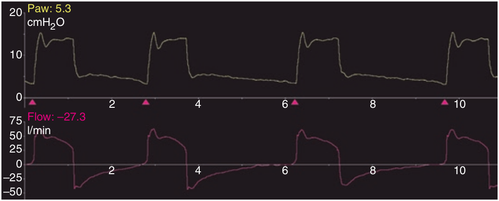

فراجهش شدت جریان بصورت بروز اوجی از فشار و شدت جریان در شروع هواگیری ریه تظاهر می کند. علت آن فشار حمایتی زیاد و زمان صعود فشار سریع می باشد که بیشتر در بیماریهای تحدیدی ریه (کمپلیانس کم و مقاومت طبیعی) روی میدهد. جهش شدت جریان معمولا بیمار را واقعا ناراحت می کند. بعلاوه بخاطر افزایش شدت جریان دمی ممکن است سبب سایکل زودرس شود. همچنین شدت جریان زیاد و ناگهانی دمی ممکن است رفلکسی را فعال کند که سبب کوتاه شدن دم عصبی شده که حاصل آن تلاش دمی سطحی و کوتاه مدت و حتی تلاش بازدمی می باشد.

فراجهش شدت جریان:
۱ - بصورت اوجی از فشار در انتهای هواگیری ریه ها می باشد
۲ - زمان صعود سریع فشار می تواند باعث آن شود
۳ - نشت تصادفی می تواند سبب آن گردد
۴ - بصورت اوجی از شدت جریان در شروع بازدم است
۵ - بیشتر در بیماریهای انسدادی ریه روی میدهد